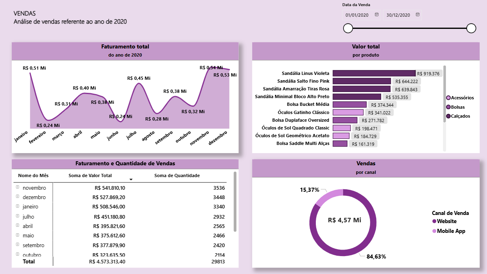
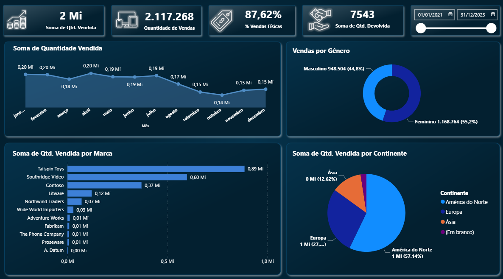
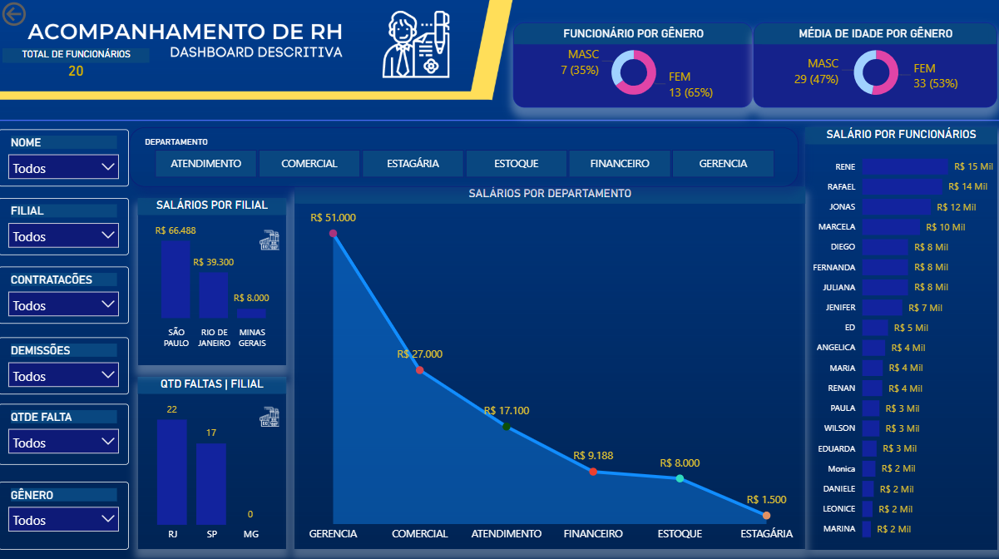
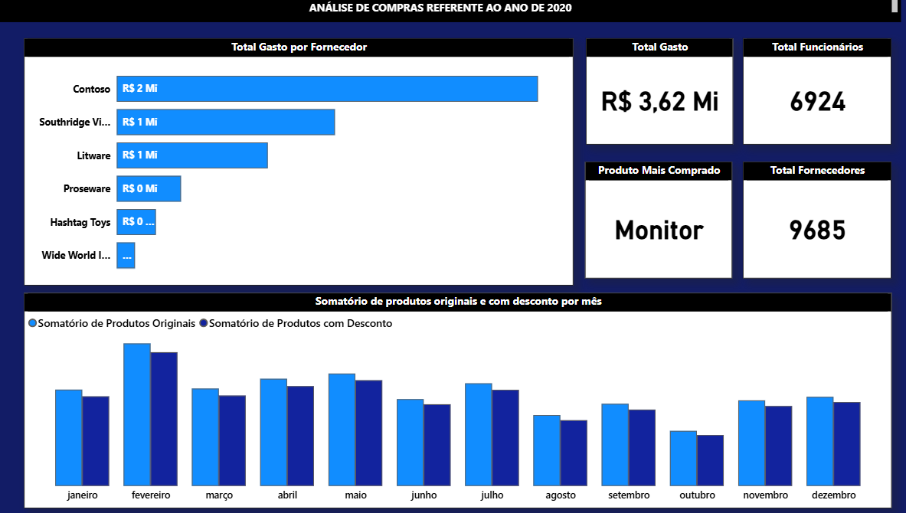
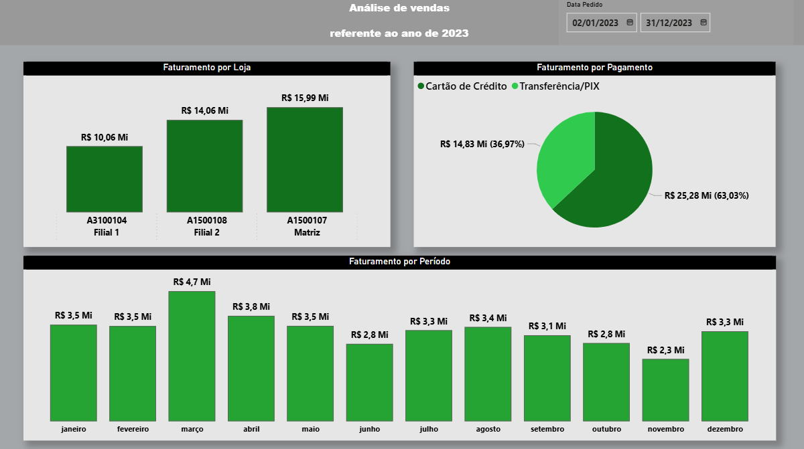
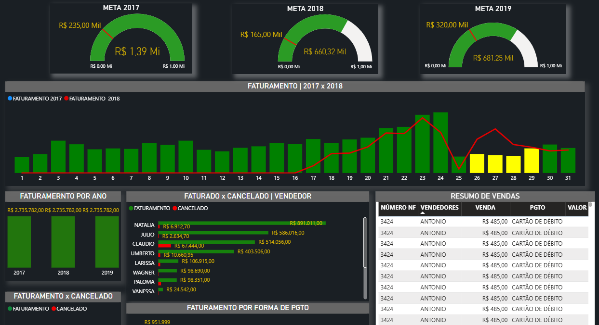
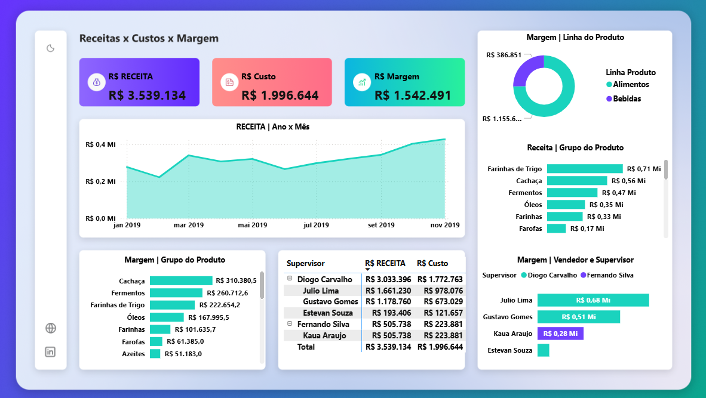
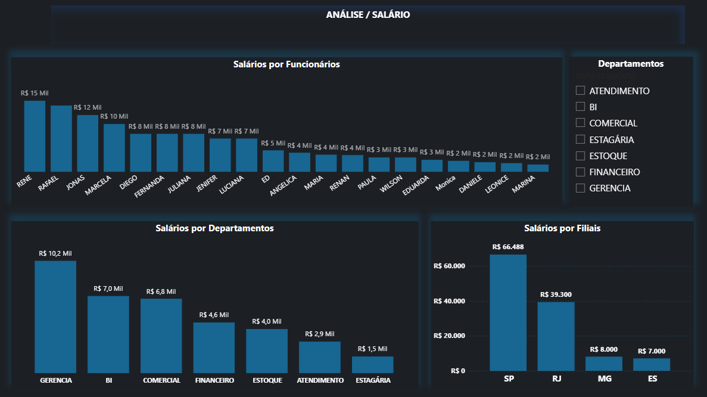
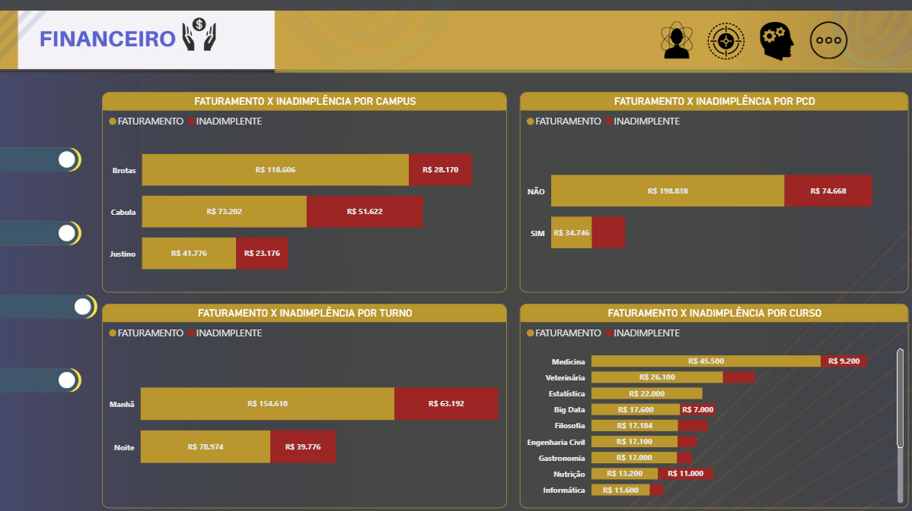
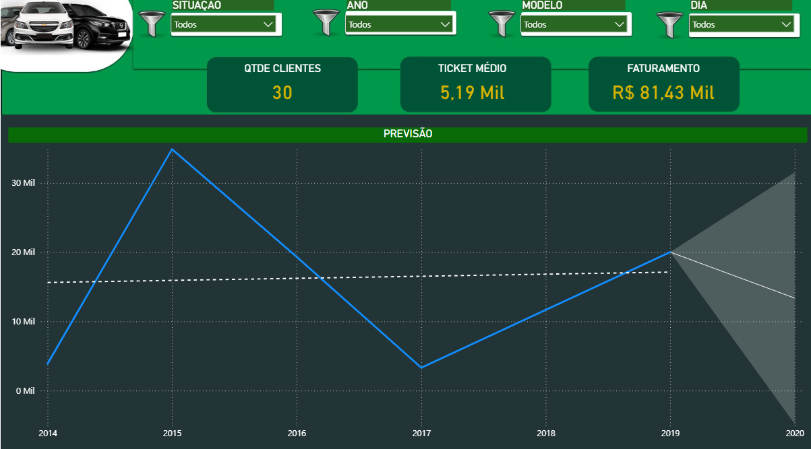

Primeiro dashboard desenvolvido por mim durante as aulas do curso, utilizando dados de uma empresa do setor de acessórios, bolsas e calçados.
Objetivo: Analisar os principais indicadores do setor de vendas.

Dashboard desenvolvido durante as aulas do curso, utilizando dados de uma empresa fictícia.
Objetivo: Analisar os principais indicadores de vendas.

Dashboard voltado para análise de dados de recursos humanos.
Objetivo: Analisar indicadores relacionados a colaboradores e estrutura organizacional.

Dashboard focado no controle e análise de compras.
Objetivo: Monitorar gastos e comportamento de compras.

Dashboard complementar de vendas com foco em análise temporal.
Objetivo: Avaliar evolução das vendas ao longo do tempo.

Dashboard com foco em análise de performance de vendas.
Objetivo: Identificar os principais drivers de vendas.

Dashboard avançado de vendas com foco em análise estratégica.
Objetivo: Apoiar a tomada de decisão com base em dados.

Dashboard voltado para análise salarial.
Objetivo: Avaliar distribuição e comportamento dos salários.

Dashboard com dados educacionais.
Objetivo: Analisar indicadores acadêmicos.

Dashboard com foco em análise de dados de veículos.
Objetivo: Monitorar indicadores do setor automotivo.